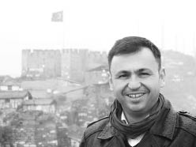

Foroğraf: Feridun Meriç
EMRAH AKÇAY
1976 yılında, Tekirdağ’da doğdum. Kara Harp Okulundan 1998 yılında mezun oldum ve Jandarma Subayı olarak göreve başladım. Uzun yıllar boyunca, ülkenin doğusunda ve batısında Jandarma Komutanı ve kolluk amiri olarak görev yaptım. Ayrıca Avrupa Birliği bünyesinde Saraybosna/Bosna Hersek’te ve NATO bünyesinde Kabil/Afganistan’da çalıştım.
2008 yılında, Anadolu Üniversitesi’nde “İletişim Tasarım ve Yönetimi” bölümünde Yüksek Lisans programına başladım ve master derecesi aldım. Halen aynı üniversite ve aynı bölümde doktora eğitimine devam ediyorum.
Eski bir fotoğrafçı olarak, iki tane belgesel film yönettim. “Sil Baştan” ve “Koreliler” isimli uzun metraj filmlerim, Youtube üzerinden bulunabilir.
İletişim, uzun soluklu bir yolculuk. Ben de, bu yolculuğa yeni başlamış, acemi bir akademisyen olarak, dağarcığıma her gün yeni bir şeyler ekliyor ve bunu insanlarla paylaşıyorum. Amacım her sabah, bir önceki sabahtan daha farklı uyanabilmek; insanların daha açık ve engelsiz bir iletişim kurabilmesine katkıda bulunabilmek ve daha fazla insanı gülümsetebilmek. Bunun için daha fazla kişiye ulaşmaya çalışıyor ve bulabildiğim her yere bir şeyler yazmaya çalışıyorum. İletişim, sözsüz iletişim ve yalan tespiti üzerine eğitimler veriyorum.
Öğrenmek bitmeyen bir süreç ve sanıyorum son nefesle birlikte sona erecek.
Daha engelsiz bir iletişim dünyası için…
Twitter: @emrahakcay59